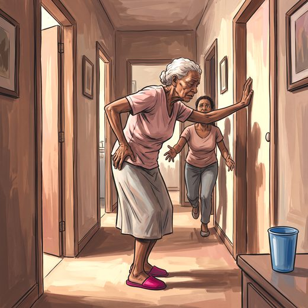

Consulta rápida à beira do leito
Condutas, doses e interações.
Referências da aula · 7
- Fried LP, Tangen CM, Walston J, et al. Frailty in older adults: evidence for a phenotype. J Gerontol A Biol Sci Med Sci. 2001;56(3):M146-56. PMID 11253156.PubMed
- Clegg A, Young J, Iliffe S, Rikkert MO, Rockwood K. Frailty in elderly people. Lancet. 2013;381(9868):752-62. PMID 23395245. doi:10.1016/S0140-6736(12)62167-9.PubMedDOI
- Cruz-Jentoft AJ, Bahat G, Bauer J, et al. Sarcopenia: revised European consensus on definition and diagnosis (EWGSOP2). Age Ageing. 2019;48(1):16-31. PMID 30312372. doi:10.1093/ageing/afy169.PubMedDOI
- Cruz-Jentoft AJ, Sayer AA. Sarcopenia. Lancet. 2019;393(10191):2636-46. PMID 31171417.PubMed
- Kirk B, Cawthon PM, Arai H, et al. The conceptual definition of sarcopenia: Delphi consensus from the Global Leadership Initiative in Sarcopenia (GLIS). Age Ageing. 2024;53(3):afae052. PMID 38520141. doi:10.1093/ageing/afae052.PubMedDOI
- Montero-Odasso M, van der Velde N, Martin FC, et al. World guidelines for falls prevention and management for older adults: a global initiative. Age Ageing. 2022;51(9):afac205. PMID 36178003. doi:10.1093/ageing/afac205.PubMedDOI
- Freitas EV, Py L, organizadores. Tratado de Geriatria e Gerontologia. 5ª ed. Rio de Janeiro: Guanabara Koogan; 2022.
Documentos oficiais
Leis e publicações do Ministério da Saúde sobre o cuidado da pessoa idosa, de acesso livre.
Abrir os documentos